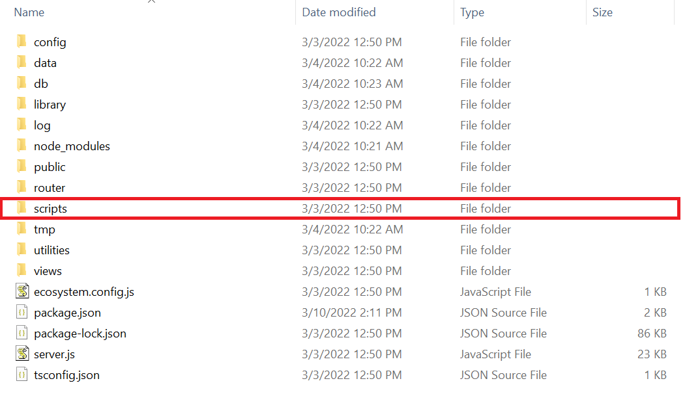
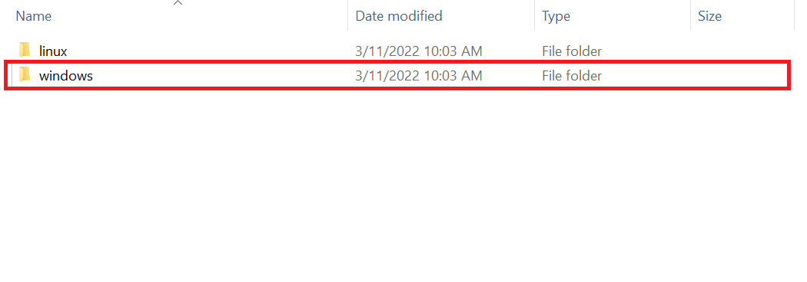
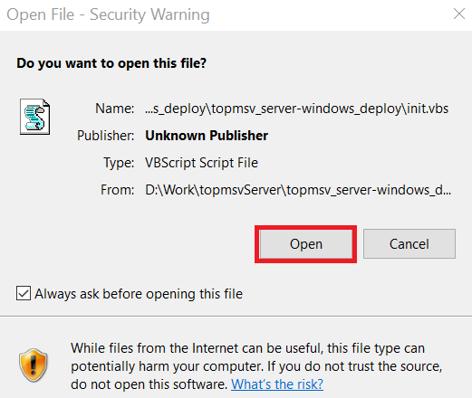

How to Start TopMSV Server
1. Start TopMSV Server
- Double click "scripts" folder

- Double click "windows" folder

- Double click "startServer.bat". A chrome browser will open when TopMSV Server is ready.

- If a pop-up below is displayed, click "Open."

2. Stop TopMSV Server
- Double click "scripts" folder
- Double click "windows" folder
- Double click "stopServer.bat" to close TopMSV Server.